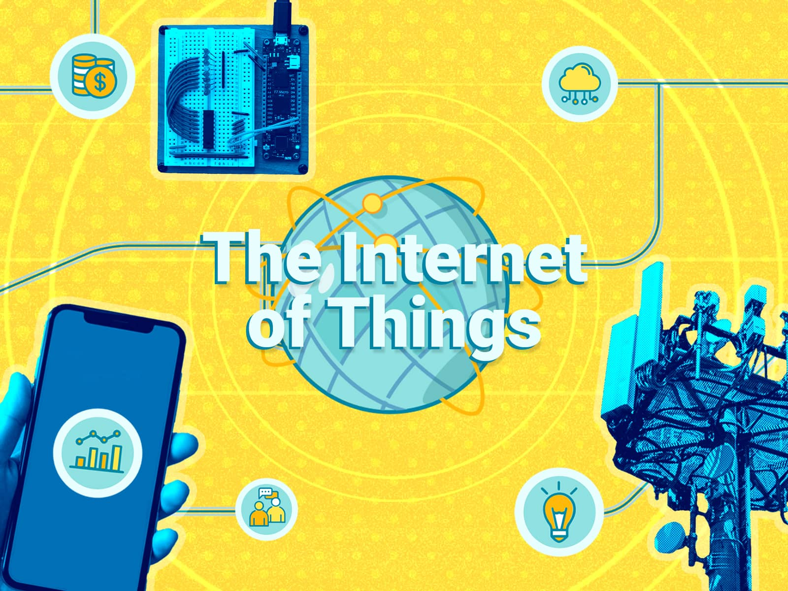

Индустриальный интернет вещей кардинально изменяет всю экономическую модель взаимодействия «поставщик – потребитель». Это позволяет:
автоматизировать процесс мониторинга и управления жизненным циклом оборудования;
организовать эффективные самооптимизирующиеся цепочки от предприятий – поставщиков до компаний – конечных потребителей;
перейти к моделям «экономики совместного использования» и многое другое.

В наиболее продвинутых случаях индустриальный Интернет вещей позволяет не только повысить качество технической поддержки оборудования с использованием развитых средств телеметрии, но и обеспечить переход к новой бизнес-модели его эксплуатации, когда оборудование оплачивается заказчиком по факту использования его функций.
Внедрение сетевого взаимодействия между машинами, оборудованием, зданиями и информационными системами, возможность осуществлять мониторинг и анализ окружающей среды, процесса производства и собственного состояния в режиме реального времени, передавача функции управления и принятия решений интеллектуальным системам приводят к смене «парадигмы» технологического развития, называемой также «четвертой промышленной революцией».